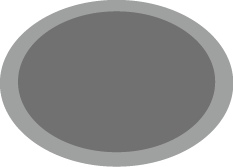

<html>
<head>
<title>ClawMachine</title>
<link rel="stylesheet" type="text/css" href="./style.css">
<meta charset="UTF-8">
<meta name="viewport" content="width=device-width, user-scalable=no, minimum-scale=1.0, maximum-scale=1.0">

</head>
<body>

<div id="container">

	<!--<div id="panel">
		
		
	</div>-->

	<div id="result" style="position: absolute; top: -25px;"></div>
	
	
	
	
	

</div>

<script src="./virtualjoystick.js" ></script>
<script>
	
	//setup();

	var m_one = 90;
	var m_three = 90;
	var m_four = 90;
	var touched;
	
	var joystick = document.getElementById("joystick");
	var grab = document.getElementById("grab");
	var base = document.getElementById("base");
	var panel = document.getElementById("panel");

	var joystick = new VirtualJoystick({
		//container: document.getElementById("panel"),
		mouseSupport	: true,
		stationaryBase	: true,
		limitStickTravel: true,
		//baseElement: base,
		//stickElement: joystick,
		stickRadius	: 210,
		baseX		: 380,
		baseY		: 320
	});

	if(window.Worker) {
		var worker = new Worker("worker.js");
	}
	
	setInterval(function(){
		var outputEl	= document.getElementById('result');
		outputEl.innerHTML	= '<b>Result:</b> '
			+ ' dx:'+joystick.deltaX()
			+ ' dy:'+joystick.deltaY()
			+ (joystick.right()	? ' right'	: '')
			+ (joystick.up()	? ' up'		: '')
			+ (joystick.left()	? ' left'	: '')
			+ (joystick.down()	? ' down' 	: '')	
	}, 1/30 * 1000);
	
	panel.addEventListener('touchstart', function(){
	
		touched = setInterval(function() {
		
			if(joystick.deltaX() > 0) {
				m_one -= 10;
			} else if(joystick.deltaX() < 0) {
				m_one += 10;
			}
			if(joystick.deltaY() > 0) {
				m_three -= 10;
				m_four -= 5;
			} else if(joystick.deltaY() < 0) {
				m_three += 10;
				m_four += 5;
			}
			
			if(m_one > 180) {
				m_one = 180;
			} else if (m_one < 0) {
				m_one = 0;
			}
			if(m_three > 180) {
				m_three = 180;
			} else if (m_three < 0) {
				m_three = 0;
			}
			if(m_four > 180) {
				m_four = 180;
			} else if (m_four < 0) {
				m_four = 0;
			}
			
			cpf.request('["braccio_movement", 30, '+m_one+', 90, '+m_three+', '+m_four+', 90, 60]');
			
		}, 500);

	});
	panel.addEventListener('touchend', function(){
		clearInterval(touched);
	});
	
	grab.addEventListener("touchstart", function(event) {
		grab.src="./images/btn_grab.png";
		
	});

	grab.addEventListener("touchend", function(event) {
		grab.src="./images/btn.png";
		cpf.request('["braccio_movement", 30, 90, 90, 90, 90, 90, 60]');
	});

	// cpf setup
	function setup(){
		if(cpf)
			var ret = cpf.setPinMode('["resetPin"],' +
                '["setPinMode", "digital", 3, "SERVO"],' +
                '["setPinMode", "digital", 5, "SERVO"],' +
                '["setPinMode", "digital", 6, "SERVO"],' +
                '["setPinMode", "digital", 9, "SERVO"],' +
                '["setPinMode", "digital", 10, "SERVO"],' +
                '["setPinMode", "digital", 11, "SERVO"],' +
                '["digitalWrite", 12, 1],' + //add in 2.00.2000, it's for Arduino Braccio V4 board
                '["braccio_initArm"]');
		
	}

</script>

</body>
</html>